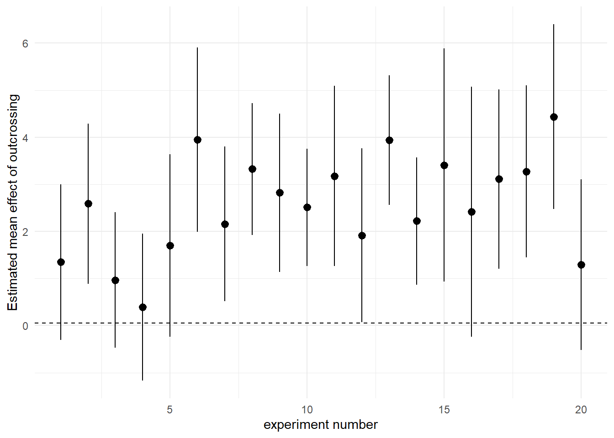

Chapter 15 Testing - Spring Week Three
15.1 It’s t-time
In the last chapter we used linear models to calculate estimates, estimates of mean difference and confidence intervals. As we can set our confidence intervals to whatever threshold we choose - reporting these without P should be sufficient for any estimation we choose. It’s the interesting bit, reporting the direction and effect size of any relationship or difference at whatever confidence threshold we want.
P-values by comparison, are boring, no-one actually cares about P-values, but you would be forgiven for thinking they are the most important thing about statistics from the way we often see them presented. And so, inevitably, you will be asked to supply a P-value for many of your lab reports, dissertations (and maybe future scientific papers). Luckily significance tests come parcelled in with the coefficients of our linear models.
15.2 Student’s t-test
The Student’s t-test uses the t-distribution, a small-sample size version of the normal distribution, where tails are fatter if the degrees of freedome are small. There are two basic types of t-test which we have encountered with our linear models.
- The one sample t-test: takes the mean of a sample and compares it with the null hypothesis of zero
lm(y ~ 1)
lm (height~1)- The two sample t-test which compares the difference between the means of two samples against a null hypothesis of no difference between the means of the two populations.
The general equation for calculating t is:
\[ t = \frac{difference}{SE} \]
SO the calculation of the t-value is essentially counting the standard errors, our rough rule of thumb is that the estimate of the difference is about twice as large as the standard error at a confidence interval of 95%, and about three times as large as the standard error at a confidence interval of 99%.
This is very approximate and becomes less robust at smaller sample sizes, because when sample sizes are large the t-distribution is roughly equal to a normal (z) distribution. However, when sample sizes are small the t-distribution has a shorter and wider distribution (we need larger standard errors to capture our 95% confidence interval).
### base R
x <- seq(-4, 4, length=100)
hx <- dnorm(x)
degf <- c(1, 3, 8, 30)
colors <- c("red", "blue", "darkgreen", "gold", "black")
labels <- c("df=1", "df=3", "df=8", "df=30", "normal")
plot(x, hx, type="l", lty=2, xlab="x value",
ylab="Density", main="Comparison of t Distributions")
for (i in 1:4){
lines(x, dt(x,degf[i]), lwd=2, col=colors[i])
}
legend("topright", inset=.05, title="Distributions",
labels, lwd=2, lty=c(1, 1, 1, 1, 2), col=colors)
#### with purrr
x <- seq(-4, 4, length=100)
z_dist <- dnorm(x)
values <- tibble(x,z_dist)
# map_dfc combines values returned into a dataframe
t <- map_dfc(degf, ~dt(x, .x))
colnames(t) <- degf
combined <- cbind(values,t)
combined %>%
pivot_longer(cols=!x, names_to="distribution") %>%
mutate(distribution=factor(distribution, levels=c("z_dist", "1", "3", "8", "30"))) %>%
mutate(distribution=fct_recode(distribution, "z distribution" = "z_dist", "df = 1" = "1", "df = 3" = "3", "df = 8" = "8", "df = 30" = "30")) %>%
ggplot(aes(x=x, y=value, colour=distribution))+
geom_line(linetype="dashed")+
theme_classic()A potential source of confusion when discussing t is that there are two values that must be considered. There is critical t the value which must be exceeded for the test to be significant (e.g. generates a P value that is less than our predefined \(\alpha\)). The critical value for t is defined by the df. Then there is the observed value of t, this is the value returned by your statistical test, calculated by \(\frac{difference}{SE}\). When \(observed~t > critical~t\) the result can be declared significantly different at that threshold for \(\alpha\).
We are spending a lot of time with t because it is the default value generated by our linear model outputs, instead of assuming a normal distriubtion and using z. Recall that for a z distribution the critical value for P = 0.05 is \(1.96 * SE\) (or roughly double the Standard Error), and actually if we look at the figure above, we can see that even at only 8 df the distribution of t is starting to look pretty close to a z distribution. The values for critical t at each degree of freedom up to 30 are presented below
df <- c(1:30)
# map_dbl forces returned values to be a single vector of numbers (rather than a list)
critical_t <- map_dbl(df, ~qt(p=0.05/2, df=.x, lower.tail=FALSE))
tibble(df,critical_t) %>%
ggplot(aes(x=df, y=critical_t))+
geom_point()+
geom_line()+
geom_hline(aes(yintercept=1.96), linetype="dashed", colour="red")+
labs(x= "Degrees of Freedom",
y= expression(paste("Critical value of ", italic("t")))) [1] 12.706205 4.302653 3.182446 2.776445 2.570582 2.446912 2.364624 2.306004 2.262157 2.228139
[11] 2.200985 2.178813 2.160369 2.144787 2.131450 2.119905 2.109816 2.100922 2.093024 2.085963
[21] 2.079614 2.073873 2.068658 2.063899 2.059539 2.055529 2.051831 2.048407 2.045230 2.042272So far we have used a mixture of the base R summary() function and the broom package tibbles produced by broom::tidy(). Summary is the most common way to investigate a model result, but it is its own specific type of R object (e.g. not a dataframe or a tibble), which is why tidying the results into a dataframe like structure can be useful.
Using either method we can can see that they include t-tests for the coefficient, summary explicity calls them t, while tidy() refers to them generically as the ‘statistic’
lsmodel1 <- lm(height ~ type, data = darwin)summary(lsmodel1)
broom::tidy(lsmodel1)# A tibble: 2 x 5
term estimate std.error statistic p.value
<chr> <dbl> <dbl> <dbl> <dbl>
1 (Intercept) 20.2 0.759 26.6 2.05e-21
2 typeSelf -2.62 1.07 -2.44 2.14e- 2
The linear model summary will automatically apply a test to every row of our table, sometimes these are the important apriori tests defined by our hypothesis, and sometimes they are not.
As an example the second row of our table is a test we planned to perform, it tests our null hypothesis by comparing the average observed difference in plant heights between cross and self-pollinated plants, it calculates the average difference (estimate), the amount of uncertainty (std. error), then calculates an observed t value and determines the probability of observing an effect of at least this size (at this sample size) if the null hypothesis is true.
However, the first row also performs a t-test, it tests a null hypothesis that the intercept (here the mean height of the cross-pollinated plants) is zero. This was not a comparison we intended to make, nor is it likely that this test is particularly useful.
Anyway the observed difference in plant heights was 2.62 inches ± 1.07, which produces an observed value of t as:
tidy_model1 <- broom::tidy(lsmodel1)
tidy_model1[[2,2]] / tidy_model1[[2,3]]Which could be the same as the value for t in our model summary.
[1] -2.43711315.2.1 Paired t
The structure of our linear model so far has produced the output for a standard two-sample Student’s t-test. However, when we first calculated our estimates by hand - we started by making an average of the paired differences in height. To generate the equivalent of a paired t-test, we simply have to add the factor for pairs to our linear model formula
# note I have made pair a factor - pair 2 is not greater than pair 1 - so it doesn't make sense to treat these as number values.
lm(height ~ type + factor(pair), data = darwin) %>%
broom::tidy(.)# A tibble: 16 x 5
term estimate std.error statistic p.value
<chr> <dbl> <dbl> <dbl> <dbl>
1 (Intercept) 21.7 2.44 8.93 0.000000375
2 typeSelf -2.62 1.22 -2.15 0.0497
3 factor(pair)2 -4.25 3.34 -1.27 0.223
4 factor(pair)3 0.0625 3.34 0.0187 0.985
5 factor(pair)4 0.563 3.34 0.169 0.869
6 factor(pair)5 -1.69 3.34 -0.506 0.621
7 factor(pair)6 -0.375 3.34 -0.112 0.912
8 factor(pair)7 -0.0625 3.34 -0.0187 0.985
9 factor(pair)8 -2.62 3.34 -0.787 0.444
10 factor(pair)9 -3.06 3.34 -0.918 0.374
11 factor(pair)10 -0.625 3.34 -0.187 0.854
12 factor(pair)11 -0.687 3.34 -0.206 0.840
13 factor(pair)12 -0.937 3.34 -0.281 0.783
14 factor(pair)13 -3 3.34 -0.899 0.384
15 factor(pair)14 -1.19 3.34 -0.356 0.727
16 factor(pair)15 -5.44 3.34 -1.63 0.125 The table of coefficients suddenly looks a lot more complicated! This is because now the intercept is the height of the crossed plant from pair 1:
The second row now compares the mean heights of Crossed and Selfed plants when they are in the same pair
rows three to 16 compare the average difference of each pair (Crossed and Selfed combined) against pair 1
Again the linear model computes every possible combination of t-statistic and P-value, however the only one we care about is the difference in Cross and Self-pollinated plant heights. If we ignore the pair comparisons the second row gives us a paired t-test. ‘What is the difference in height between Cross and Self-pollinated plants when we hold pairs constant.’
For completeness let’s generate the confidence intervals for the paired t-test.
lm(height ~ type + factor(pair), data = darwin) %>%
broom::tidy(., conf.int=T) %>%
slice(1:2)We can see that estimate of the mean difference is identical but the 95% confidence intervals are now slightly different. So in this particular version we have actually increased our level of uncertainty by including the pair parameter.

What does this mean for choosing the right model? Click-me for answer
In future sessions we will work through model building and simplification, in this case we had a good a priori reason to include pair in our initial model, there are then simple tests we can do to see if it is safe to remove it, if it doesn’t appear to be adding to our explanation of the difference in heights between self and cross-fertilised plants.
15.3 Effect sizes
We have discussed the importance of using confidence intervals to talk about effect sizes. When our 95% confidence intervals do not overlap the intercept, this indicates we have difference in our means which is significant at \(\alpha\) = 0.05. More interestingly than this it allows us to talk about the ‘amount of difference’ between our treatments, the lower margin of our confidence intervals is the smallest/minimum effect size. On the response scale of our variables this is very useful, we can report for example that there is at least a 0.43 inch height difference between self and crossed fertilised plants at \(\alpha\) = 0.05.
However we may also see reports describing “large,” “medium” or “small” effect sizes, how do we know if we are looking at a result with a “large” effect size? The answer is to use a method of standardisation. Interestingly there are lots of these, but we will look at one of the most common Cohen’s D. It is simply a measure of standardising effect sizes across experiments according to the standard deviations of the differences.
| Effect size | d |
|---|---|
| very small | 0.01 |
| small | 0.20 |
| medium | 0.50 |
| large | 0.80 |
| very large | 1.20 |
| huge | 2.00 |
For the unpaired t-test and then the paired t-test (lsmodel1, lsmodel2), see if you can use the following equations to manually calculate d.
Unpaired t-test - the difference in means divided by the pooled standard deviation:
\[ \frac{difference}{\frac{(s^2_1+s^2_2)}{2}}\]
Paired t-test:
\[ \frac{t}{\sqrt(N)}\]What do you calculate as the effect size for these two analyses? Click-me for answer
unpaired t-test: 0.92
paired t-test: 0.45
There is also a package with functions to help you calculate a range of common standardised effect size measures - it also provides confidence intervals on a standardised scale (where 0 would be no effect):
library(effectsize)
t_to_d(2.437, df_error = 28, paired = F)
t_to_d(2.456, df_error=27, paired=T)15.3.1 Power
You don’t necessarily need to report effect sizes in a write-up, it is fairly rare to see them included in a paper. It will be more useful for you to report confidence intervals on the original measurement scale. But it does provide two important pieces of information.
All experiments/statistical analyses will become statistically significant if you make the sample size large enough. In this respect it shows how misleading a significant result can be. It is not that interesting if a result is statistically significant, but the effect size is tiny. Even without reporting d you can start thinking about whether confidence intervals indicate your result is interesting.
Type 2 errors. Statistical tests provide you with the probability of making a Type 1 error (rejecting the null hypothesis incorrectly) in the form of P. But what about Type 2 errors? Keeping the null hypothesis, when we should be rejecting it? Or not finding an effect.
The probability of making a Type 2 error is known as \(1-\beta\), where \(\beta\) refers to your statistical ‘power.’ Working out statistical power is is very straightforward for simple tests, and then becomes rapidly more diffcult as the complexity of your analysis increases… but it is an important concept to understand.
There are two potential uses for Power analysis
Working out what the statistical power of you analysis was post hoc to determine how likely it was you missed an effect ( but seeThis useful paper.
Working out what sample size you need before an experiment to make sure you reach the desired power. Often a common \(\beta\) value is 0.8, in much the same way that a common \(\alpha\) is 0.05, it is an arbitrary target, but here means we can tolerate a risk of failing to reject the null when we should have in 20% of our experiments that do not produce a significant result.
library(pwr)
# for n, d, sig.level and power - put values for three of the arguments and it will return the value of the fourth e.g. can you work out the power of our two sample t-test above?
pwr.t.test(n = NULL, d = NULL, sig.level = 0.05, power = NULL,
type = c("two.sample"),
alternative = c("two.sided"))Now you know how the pwr.t.test() function works - Can you make a simple iteration to check the power for a lower effect size (d) of 0.2 for a two-sided t-test at sample sizes from 0-1000 increasing by 10 each time?
sample_size <- seq(0,1000, by=10)
output <- list(length(sample_size))
for (i in 1:length(sample_size)) {
sample <- pwr.t.test(n=sample_size[i], d=0.2, sig.level=0.05)
output[[i]] <- sample
if(i %% 1==0){ # The %% operator is the remainder, this handy if line prints a number every time it completes a loop
print(i)
}
}
sample_list <- as.list(sample_size)
names(output) <- sample_size
# now you should be able to call any sample size and check statistical power!
# output$`30`15.4 Meta-analysis
The repeatability of results is a key part of the scientific method. Unfortunately there is often an emphasis in the literature on ‘novel findings,’ which means that unusual/interesting results that happen to reach statistical significance may be more likely to be published. The reality is that we know if we set an \(\alpha\) = 0.05, that we run the risk of rejecting the null hypothesis incorrectly in 1 in 20 of our experiments.
It is not possible for you to know from a single experiment whether you have found a genuine effect or made a Type 1 error. However, over time as experiments are eventually repeated the literature builds up allowing us to synthesise the evidence. Let’s try that now & imagine a scenario where Darwin’s experiment has been repeated another 20 times.
In the example below we have made a for loop that assumes we ‘know’ the true mean difference of crossed and fertilised plants and the standard deviation of the ‘population’(we have taken Darwin’s experimental data for this). The for loop then creates 20 new sampling experiments, and calculates the estimated mean difference for each experiment
set.seed(1234)
myList <- vector("list", 20)
y <- tibble()
for (i in 1:length(myList)) {
x <- rnorm(n=12, mean=2.6, sd=2.83)
data <- tibble(x)
temp <- lm(x~1, data=data) %>%
broom::tidy(conf.int=T)
y <- rbind(y,temp)
}
y$`experiment number` <- rep(1:20)
# the new dataframe y contains the results of 20 new experimentsUsing this newly generated data how many experiments found a significant difference and how many did not? - What would you conclue from this?
y %>%
mutate(`p value < 0.05` = if_else(p.value > 0.049, "non-significant", "significant")) %>%
group_by(`p value < 0.05`) %>%
summarise(`number of experiments`=n())## # A tibble: 2 x 2
## `p value < 0.05` `number of experiments`
## <chr> <int>
## 1 non-significant 6
## 2 significant 14In my example nearly a third of the experiments did not find a statistically significant difference. A less formal review of the research might tally these P-values and conclude that there are inconsistent results in the literature.
A better way would be to look at the estimates and calculated confidence intervals
Using this newly generated data compare the estimates and confidence intervals? - What do you conclude from this?
y %>%
ggplot(aes(x=`experiment number`, y=estimate))+
geom_pointrange(aes(ymin = conf.low, ymax=conf.high))+
labs(y = "Estimated mean effect of outcrossing")+
geom_hline(linetype="dashed", yintercept=0.05)+
theme_minimal()
By illustrating this visually, it is clearer to see that the results are not really inconsistent, the negative effects of inbreeding depression are clear to see in all of the experiments - we are simply observing the effect of sampling error.
All 20 studies showed the effect of inbreeding depression, and all the experiments have identical levels of uncertainty. We can clearly see that estimates and intervals are a substantial improvement in the way we report experiments, and that they make comparisons across repeated studies more valuable.
15.5 Summary
This chapter finally allowed us to calculate P-values and test statistical significance for our experiments using linear models. We also compared the linear model structures for producing a paired vs. unpaired t-test.
However we also learned to appreciate the potential issues around making Type 1 and Type 2 errors, and how an appreciation of confidence intervals and standardised effect sizes can be used to assess these.
A single experiment is never definitive, and a reliance on reporting P-values is uninformative and can be misleading. Instead reporting estimates and confidence intervals allows us to report our levels of uncertainty, and provides results which are more informative for comparitive studies.